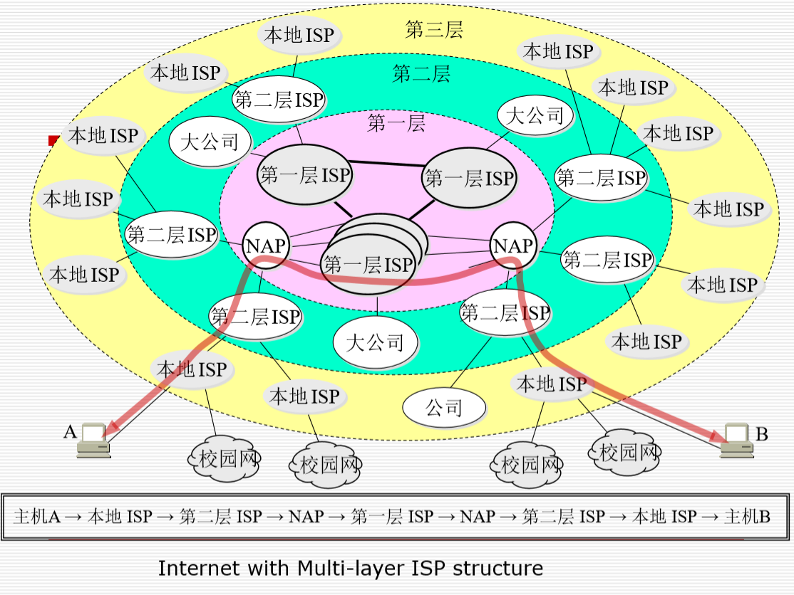
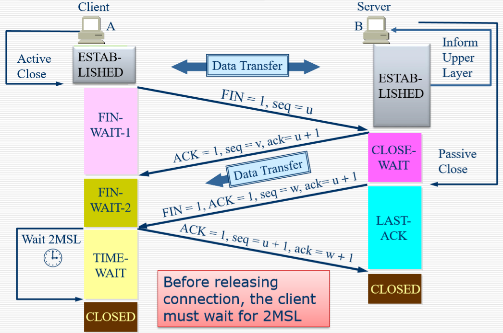
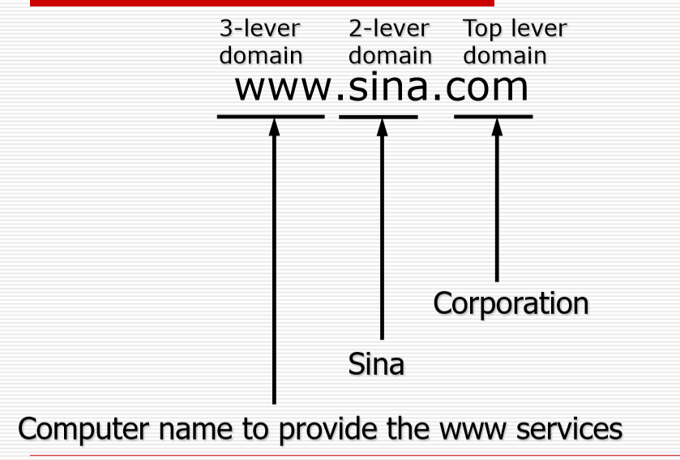
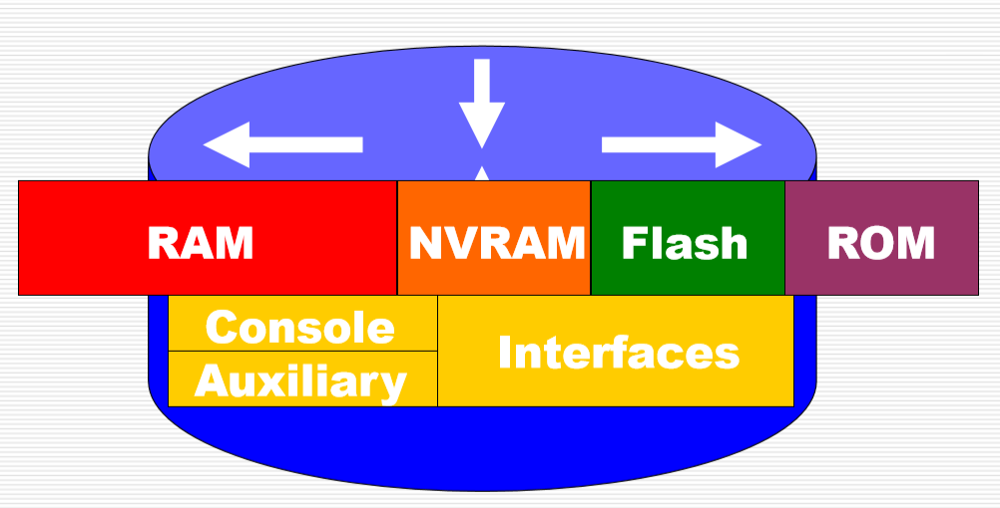
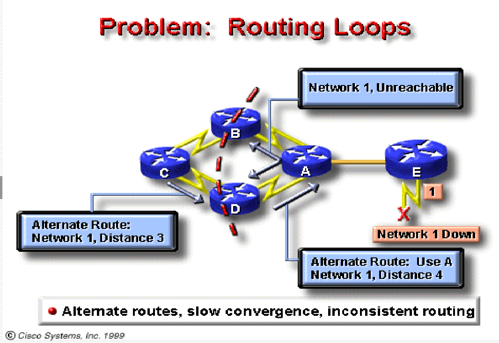
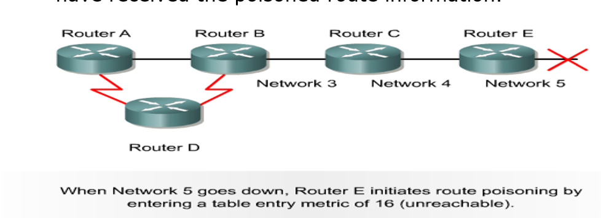
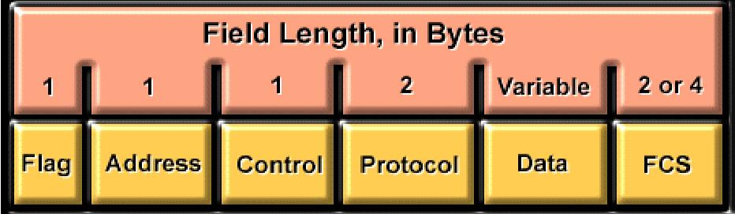

计算机网络
计网重点
数据传输过程梳理
发送方：
- 第一步：发送方从应用程序出发，应用层产生数据，表示层进行格式转换，会话层管理应用程序间的连接
- 第二步：数据进入传输层，如果是UDP，直接加上首部后进入网络层；如果是TCP，将数据进行切片变成数据段（segment），先建立连接，然后加上TCP报文首部，进入网络层
- 第三步：网络层IP协议加上IP报头封装成IP数据包
- 第四步：数据链路层的LLC和MAC子层先后加上其对应的报头，将数据包封装成数据帧
- 此过程中若未知MAC地址，通过ARP协议获取
- 第五步：数据帧进入物理层，作为比特流开始发送
分情况：
- 局域网内：比特流传给目标主机解析
- 局域网外：比特流传给路由器连接本网段的端口（网关），路由器的物理层、数据链路层、网络层等对其进行解析，根据目标IP地址进行路由决策，然后从对应的端口再次封装成数据包，进行转发（线路传播时以比特流形式）；对应网络的路由器收到后再进行这些过程之后把数据包再传输给目标主机
接收方：
- 物理层：
- 比特流接收： 接收方的物理层负责从传输媒介（电缆、光纤等）接收比特流。
- 数据链路层：
- 帧解析： 物理层传递的比特流被数据链路层接收，数据链路层负责解析帧，提取出帧头和帧尾，确保帧的完整性。
- MAC地址比对： 数据链路层检查帧中的目标MAC地址，与接收设备的MAC地址进行比对，以确定是否是发给自己的帧。
- 数据帧提取： 如果目标MAC地址匹配，数据链路层提取出帧中的数据部分。
- 网络层：
- IP头解析： 数据链路层提供的数据帧中包含IP数据包，网络层解析IP头，提取源IP地址和目标IP地址。
- 传输层：
- TCP/UDP头解析： 如果使用TCP或UDP协议，传输层解析TCP或UDP头，提取端口号等信息。
- 应用层：
- 数据交付应用程序： 最终，数据交付给应用层，应用层根据协议和数据的特定格式进行解析，将数据交付给目标应用程序进行进一步处理
网络拓扑
- 最可靠的是网状拓扑（mesh）
多层ISP结构的Internet
- 互联网服务提供商(ISP,Internet Service Providers)
- 第一层ISP是核心层，主要负责远距离连通。
- 这种多层ISP结构可以将大量的流量本地化
- NAP(Network Access Point):第一二层之间的接入点,也可以是google(大公司)直接和第一层ISP进行链接
- ICP(Internet Content Provider):互联网内容提供商,不提供接入服务
- 在低层次的ISP可以解决的问题就不进入上一层进行解决，将大量的流量分流。
物理层
局域网介质
- UTP (无屏蔽双绞线 Unshielded Twisted Pair)
- 由八根子线组成,两个线组合成一组，共四组，可以保证每一组电流抵消电磁波干扰(抗干扰能力有限)
- 易于安装且成本较低，线薄接口小
- 与其他类型的网络媒体相比，电缆更容易产生电噪声和干扰
- 双绞线的信号增强距离比同轴电缆(Coaxial)和光纤(Fiber-Optic)短
- 同轴电缆 Coaxial
- 与双绞线相比，不使用中继器的网络运行时间更长
- 比光纤便宜但比双绞线贵
- 中间是铜导线，在外面缠上一层金属网，防止外部干扰，细导线传输相对近，粗导线传输相对比较远
- 500m左右，比双绞线传输更加远，成本也要高一点
- 光缆 Fiber-Optic
- 传导调制(modulated)光传输
- 不易受到电磁干扰或射频干扰，并且能够比其他网络媒体更高的数据速率
- 电磁波(electromagnetic wave)通过光纤被引导
- 比较可靠，中间是二氧化硅(光导体)，外面是塑料套，两个接口一个接收一个发送
- 成本比较高
- 光缆模式
- 单模式：单个光传输
- 多模式：多根光不同角度传输 Multi-mode
- 无线通信
- 激光
- 红外线
- 无线电波
UTP for Ethernet
UTP线分类见笔记
介质和信号问题
- 信令和通信问题
- 传播(本质是电磁波)延迟
- 衰减 Attenuation
- 反射 Reflection
- 噪声(电子干扰) Noise
- 冲突和冲突域
- 当两个位元在同一网路上同时传播时，会发生碰撞
- 分割冲突域：将不同的冲突域进行分段(第一层设备无法解决这些问题)，还是在一个局域网中
- 通过添加中继器和集线器扩展冲突域。
- 可以通过添加智能设备(如网桥、交换机和路由器)来分割冲突域
数据通信基础概念
概念
码元(code)：在使用时间域(或简称为时域,基本时间单位)的波形表示数字信号时，代表不同离散数值的基本波形，是传输基本单位，并不一定只包含一位
香农公式：C = W log2(1 + S/N) bps（C：最高数据传输速率，W：带宽Hz，S：信号功率，N：噪声功率）
波特率(调制速率)：波信号每秒钟变化的次数
比特率：每秒钟传送的二进制位数
传输过程：
数字数据编码
- 将数字数据转换到模拟信号：调制
- 将数字数据转换到数字信号：线路编码
- 线路编码是指将二进制数据转换成可以在物理通信链路上传输的形式，例如电线上的电脉冲、光纤上的光脉冲或空间中的电磁波
编码方式的分类
单极性编码:一个正极或者负极，用0电平表示”0”，正电平表示”1”
极化编码：不归零制码(NRZ: Non-Return to Zero)
- 不归零电平编码：用负电平表示”0”，正电平表示”1” (或相反)，一定的中和
- 不归零反相编码：信号电平的一次翻转代表比特1，无电平变化代表0
极化编码：归零制码(RZ: Return to Zero)
- 用负电平表示”0”，正电平表示”1”(或 相反)，比特中位跳变到零电平，从而提供同步
极化编码：曼彻斯特码(Manchester)
- 每一位中间都有一个跳变，从低跳到高表示”0”，从高跳到低表示”1”
极化编码：差分曼彻斯特码(Differential Manchester)
- 每一位中间跳变：表示时钟
- 每一位位前跳变：表示数据：有跳变表示”0”，无跳变表示”1”
双极性编码：双极性传号交替反转码(AMI)
- 采用三个电平：正、负与零，零电平表示”0”，正负电平的跃迁表示 “1”，实现对”1”电平的交替反转
多路复用
时分复用TDM：时分复用是将时间划分为一段段等长的时分复用(TDM )帧， 每个时分复用的用户在每个 TDM 帧中占用固定序号的时隙
统计时分复用 STDM (Statistic TDM)
频分复用 FDM：用户在分配到一定的频带后，在通信过程中自始至终都占用这个频带
波分复用 WDM：波分复用就是光的频分复用：频率和波长是成倒数关系的
码分复用 CDM：用户采用相同频率，但是对于数据编码进行变换
数据链路层
概述
主要任务
- 错误识别(notification)
- 网络拓扑(Network topology)
- 流控制(Flow control)
用帧组织比特流
提供三种服务
不带有确认的无连接服务
带有确认的无连接服务：无线网
带有确认的有连接服务：蓝牙
与物理层的对比
| 第一层 | 第二层 |
|---|---|
| 无法与上层通信 | 通过LLC与上层通信 |
| 无法确定哪台主机将会传输或接受二进制数据 | 通过MAC确定 |
| 无法命名或标识主机 | 通过寻址或命名过程来实现 |
| 仅仅能描述比特流 | 通过帧来组织/分组比特 |
- 局域网三种传输方式
- 单播：将单个数据包从源发送到网络上的单个目标
- 多播：由发送到网络上特定节点子集的单个数据包组成，这些节点都有同样的进程进行响应
- 广播：单个数据包传输到网络上的所有节点
- 多播地址
- IPv4 中的多播地址是从 224.0.0.0 到 239.255.255.255 的范围
- 224.0.0.0 - 224.0.0.255： 为系统保留，用于本地网络控制块。
- 224.0.1.0 - 224.0.1.255： 为路由信息协议（Routing Information Protocol, RIP）的用途保留。
- 224.0.0.0/4： 称为预留地址空间，用于各种用途。
- 232.0.0.0 - 232.255.255.255： 为源特定多播（Source-Specific Multicast, SSM）保留。
以太网与带冲突检测的载波侦听多路访问（CSMA/CD）
IEEE 802.2、802.3、802.5
LLC子层（802.2）
- 逻辑上标识不同的协议类型，然后将其封装，兼容不同介质的访问
- 使用SAP标识符执行逻辑标识，用来做发送的位置的标识
- LLC帧的类型取决于上层协议期望的标识符，对于上层服务进行支持
- LLC已经比较规范了，后来有的厂商已经放弃继续做
MAC子层（802.3）
- 定义如何在物理线路上传输帧(frames)
- 处理物理寻址
- 定义网络拓扑
- 定义线路规则(discipline)
- 802.3 覆盖了物理层和第二层下半层
令牌环（802.5）
- 在令牌环网络中，计算机连接成一个物理环或逻辑环，数据包通过一个称为“令牌”的特殊控制帧在环上传递。令牌是一种允许持有它的设备在网络上传递数据包的权限标记。
帧结构
- 前同步码：8字节（不算在帧长度里）
- 目标地址：6字节
- 源地址：6字节
- 长度/类型：2字节
- 数据：46(18 + 46 = 64字节) ~ 1500字节
- FCS字段（包含循环冗余校验码）：4字节
最短帧长：64字节
LLC子层对数据包进行封装并添加控制信息，然后交给MAC子层进一步封装
MAC子层
- MAC地址为48位，始终表示为12个十六进制数字
- 广播目标MAC：全1(FFFF.FFFF.FFFF)，仅在未知目的主机MAC和目的主机为全部主机时使用
- 以太网是广播网络
以太网的CSMA/CD
- 首先设备要发送数据
- 开始侦听链路是否忙，如果忙，则过一阵来再看看
- 如果不忙，则开始准备发送
- 如果有错误，则到9，表示有冲突发送，广播一个jam signal，把自己尝试的次数 + 1(重发有一定限度)
- 尝试次数过多，会像上层协议传输网络不可用
- 尝试次数还可，则到13计算一个回退时间，来再次尝试，回退时间单位，会保证A和D的时间差能保证第一个人已经用完链路来避免冲突。
- 如果没有错误，则一直传输到结束为止
无线局域网的CSMA/CA
无线局域网分类
- 有基础设施拓扑网络(Infrastructure mode)
- 无基础设施拓扑网络(ad-hoc mode)
一些名词
- BSS：基础服务集
- BS：基站
- AP：无线接入点
无线局域网标准
- IEEE 802.11
- 一项关键技术：直接序列扩频(DSSS，Direct Sequence Spread Spectrum)
- DSSS适用于在 1 到 2 Mbps范围内运行的无线设备，上面的这个速率在实际生活场景中要除以2，因为无线通信都是有确认的，所以一般我们认为信道一来一回才有一次通信。
- DSSS可以高达11 Mbps的速度运行，但在2 Mbps以上时将不被视为兼容
- 也称为 Wi-Fi™，无线保证度，是星型拓扑，基站作为中心
- IEEE 802.11b(Wi-Fi)
- 传输能力提高到11 Mbps
- 所有802.11b系统都向后兼容(backward compliant)，因为它们还仅针对DSSS支持1和2 Mbps数据速率的802.11。
- 通过使用与802.11不同的编码技术来实现(Achieves)更高的数据吞吐率
- 在2.4 GHz内运行，解决了802.11中出现的部分问题
- 使用的是高速直连方案
- IEEE 802.11a
- 涵盖在5 GHz传输频带中运行的WLAN设备，运行在5 GHz上
- 802.11a能够提供54 Mbps的数据吞吐量，并且采用称为”速率加倍”的专有技术已达到108 Mbps。
- 实际上，更标准的等级是20-26 Mbps。
- 传播距离相比802.11和802.11b短(衰减强)，但是对于多用户上网的支持更好了。
- 使用正交频分复用技术。
- IEEE 802.11g
- 可以提供与802.11a(54Mbps)相同的功能，但具有802.11b的向后兼容性
- 使用**正交频分复用(OFDM，Orthogonal Frequency Division Multiplexing)**技术。
- IEEE 802.11n: 下一代的WLAN
- 提供的带宽是802.11g的两倍，即108Mbps，理论上可达500-600Mbps。实际上是100M左右
- 目前使用比较多的方案。
- IEEE 802.11
数据帧结构
无线网络的CSMA/CA
- A向B发送RTS(Request To Send，请求发送)帧，A周围的站点在一定时间内不发送数据，以保证CTS帧返回给A；
- B向A回答CTS(Clear To Send，清除发送)帧，B周围的站点在一定时间内不发送数据，以保证A发送完数据；
- A开始发送
- 若控制帧RTS或CTS发生冲突，采用二进制指数后退算法等待随机时间，再重新开始。(A和C同时发送RTS)
WLAN和以太网区别
Ethernet WLAN 信号被传输到连接在线缆上的所有站点上 信号只被传输到接近发送站点的站点 接受站点检测冲突 只会有一个有效帧在信道上传播 会有多个有效帧同时在信道上传播 MAC协议必须尽可能保证只有发送站点接近接收站点
第二层设备
网桥、交换机：具体见笔记
分割冲突域：
网桥
- 用网桥来分割局域网的以太网，给每个用户提供更多带宽，因为每个网段上用户更少
- 网桥增加了10%~30%的网络延迟，因为需要做决定
交换机
- 交换机比网桥更快，因为他们在硬件中交换，然而网桥在软件中交换
- 局域网交换机减小了冲突域的大小
- 所有连接到交换机的主机仍然在同一个广播域中
路由器（第三层）
- 路由器可以创建最高级别的细分：
- 创建较小的冲突域
- 创建较小的广播域：除非经过编程，否则路由器不会转发广播。
- 路由器通过检查数据包上的目标逻辑地址，然后在其路由表中查找转发指令来完成数据包的转发
- 由于路由器比网桥执行更多的功能，因此它们以更高的延迟率运行。
- 路由器可以用作网关，用于连接不同的网络媒体和不同的LAN技术
- 是根据逻辑地址(IP地址)进行转发，不再是MAC
网络层
概述
- 第三层只能避免拥塞，但是要到第四层(运输层)才能完成流量控制(第三层不能完成流量控制) Q：到底能不能流量控制
- 路由器
- 互连网段或网络(不同网段的分割)
- 根据IP地址做出合理的决定
- 确定最佳路径，根据路由表。
- 将数据包从入站端口切换到出站端口
- 广播域划分：如果A网段的设备向路由器发送了一个B网段的广播地址，那么路由器会进行转发，然而如果A网段设备发送的是本网段的广播地址，路由器则不会进行转发
IP地址和子网划分
IPv4报文结构（具体见笔记）

IP地址
IP地址为32位长(IPv4中)
它们以点分十进制格式表示为四个八位字节：133.14.17.0
IP地址包含两个组成部分：
- 网络ID
- 主机ID
分类：
- 0–127 Class A address A类地址
- 128-191 Class B address B类地址
- 192–223 Class C address C类地址
- 224–239 Class D – Multicast D类地址：多播：视频点播的原理也是组播(多播)
- 240–255 Class E - Research E类地址：研究
- host不能全取0，也不能全取1。全取0：网络地址；全取1：广播地址
专用地址/私有地址：用于局域网内部网段
10.0.0.0 - 10.255.255.255
172.16.0.0 - 172.31.255.255
192.168.0.0 - 192.168.255.255
子网


借用的最小位数是2，为什么？
- 如果只借用1位以创建一个子网，那么您将只有一个网络号-.0网络-和广播号-.1网络，没有可以使用的专用网络。
- 两位的时候，01和10给Host，00为网络ID，11为广播地址
- 全0可能导致误判
子网掩码：网络位全1，主机位全0
计算子网网络地址：子网地址和子网掩码按位与
计算过程见笔记
路由器
- 端口与网关
- 接口是路由器连接到网络的附件，在IP路由中也可以称为端口。
- 这个IP地址往往被作为这个网络的网关
- 每个接口必须具有一个单独的唯一网络地址
- IP地址分配
- 静态地址分配
- 动态地址分配：
- RARP: Reverse Address Resolution Protocol. RARP：反向地址解析协议。ARP为IP到MAC的转换，而RARP为MAC到IP的转换，向RARP服务器请求分配IP。主要流程：发出要反向解析的物理地址并希望返回其对应的IP地址。发送主机发送一个本地的RARP广播，在此广播包中，声明自己的MAC地址并且请求任何收到此请求的RARP服务器分配一个 IP 地址。 本地网段上的RARP服务器收到此请求后，检查其RARP列表，查找该MAC地址对应的 IP 地址。 如果存在，RARP服务器器就给源主机发送一个响应数据包并将此 IP 地址提供给对方主机使用; 如果不存在，RARP服务器对此不做任何的响应。 源主机收到从RARP服务器的响应信息，就利用得到的IP地址进行通讯;如果一直没有收到RARP 服务器的响应信息，表示初始化失败。
- BOOTstrap协议。用于工作栈
- DHCP: Dynamic Host Configuration Protocol. (比较多用)动态主机配置协议
- ARP协议（地址解析协议）
- 源主机访问目的主机不知道对方MAC，优先查找本地ARP表（时效性）
- 若ARP表中没有，将目标MAC设为全1进行广播，发送ARP请求
- 若目标主机在局域网内，它收到ARP请求后检查IP地址发现与自己IP一致，将自己的MAC放进帧中发送给源主机
- 若目标主机处于另一个网络，则路由器会将自己的MAC作为目标主机MAC给源主机，此后源主机的帧由路由器转发给目的主机（代理ARP）
- 此过程中所有收到帧的主机都会将发送方MAC存进自己的ARP表
- 默认网关
- 除了代理ARP，还可以通过默认网关与另一网络设备通信
- 默认网关是路由器上连接到源主机所在网段的接口的IP地址
- 为了使设备将数据发送到另一个网段上的设备的地址，源设备将数据发送到默认网关
网络协议操作
- Routed protocol 被动可路由协议
- 将目的主机和掩码进行逻辑AND操作，得到对应的网段
- 然后请求路由表可以发现目的网段对应端口
- 再次将报文封装转发给对应的主机
- 路由表是存储在内存中的
- 管理距离
- 管理距离（Administrative Distance）是路由选择过程中一个用于衡量路由可信度的参数。在多路由协议环境中，可能存在多个路由到达相同目的地的候选项，管理距离用于确定使用哪个路由信息。较低的管理距离值表示路由更可信。
- 直接连接（Connected）：0
- 静态路由（Static Route）：1
- Enhanced Interior Gateway Routing Protocol (EIGRP)：90
- Open Shortest Path First (OSPF)：110
- Routing Information Protocol (RIP)：120
- Border Gateway Protocol (BGP)：200
- 当未指定管理距离时，使用以上默认值（default）
- 静态路由和动态路由的区别
- 静态路由
- 用于隐藏部分网络。安全(不必进行路由表的交换)
- 测试网络中的特定链接。
- 用于仅在到达目标网络的路径时维护路由表。
- 动态路由
- 维护路由表。
- 以路由更新的形式及时分发信息。
- 依靠路由协议共享知识。
- 路由器可以调整以适应不断变化的网络状况。
- 打开后会启动进程，按照不同的协议，和网上的不同设备学习信息，然后根据算法生成路由表
- 静态路由
- 被动路由协议和主动路由协议
- Routed Protocol用于路由器之间，用来保证路由器之间连通(完成转发)，保证路由器有效连通。
- Routing Protocol用于做各自的路由表的生成：路由器彼此交换信息。
- Routing Protocol 决定 Routed Protocols
- 动态路由协议的分类
- 内部网关协议(Interior Gateway Protocols，RIP，IGRP，EIGRP，OSPF)：可在自治系统(autonomous system，大的单位或者管理方)中使用，该系统是一个主管部门下的路由器网络，例如公司网络，学区的网络或政府机构的网络。
- 外部网关协议(Exterior Gateway Protocols，EGP，BGP)：用于在自治系统之间路由数据包。
- 内部网关协议的分类：DVP and LSP
- 距离矢量协议(Distance-Vector Protocols，RIP, IGRP):
- 从邻居的角度查看网络拓扑，只知道到达一个网段的最少跳数(注意不基于全局)
- 在路由器之间添加距离向量。(根据跳数来决定，经过一个路由器+1一次)
- 经常定期(periodic)更新，即与邻居交换路由信息
- 将整个路由表的副本传递到邻居路由器。
- 链路状态协议(Link State Protocols, OSPF):
- 获取整个网络拓扑的通用视图。(全局的视角，会有代价)
- 计算到其他路由器的最短路径。(基于带宽计算出来的cost，形成cost拓扑图，然后计算出对应的路径代价作为评判依据)
- 事件触发的更新。如果没有事件发生那么就不会更新
- 将链接状态路由更新传递给其他路由器。
- LSP操作过程:
- 相互交换彼此学到对应的Topological Database(是全局的信息)
- 之后使用SPF算法，以自己为根，通过最短路径优先算法，生成以自己为根的树
- 根据这一个树再生成路由表(了解全局的信息)，逻辑是树的逻辑。
- 距离矢量协议(Distance-Vector Protocols，RIP, IGRP):
- RIP（典型DVP）
- 基于DVP
- 唯一的指标是跳数。
- 最大跳数为15。(评判依据简单，是一个短板)
- 每30秒更新一次(广播)，可以修改
- 并非总是选择最快的路径(而是走跳数最短的路径)。
- 产生大量的网络流量。
- OSPF(Open Shortest Path First)：典型LSP
- 最短路径优先协议，是基于链路状态的内部网关协议，消耗CPU和内存。
- 指标由带宽，速度，流量，可靠性和安全性组成，本科阶段只考虑带宽的。
- 事件触发更新
- 在LSP中用的比较多。它节约了带宽资源，需要host的CPU资源来执行算法。将最小生成树转化成路由表
- 最快和什么有关？(最快指的是带宽)
- 和实时各条链路上的通信冗余有关，也和管理方案有关，简单来说是和带宽有关
- 带宽表示为代价，带宽和代价成反比
- IGRP (Interior Gateway Routing Protocol)和EIGRP (Enhanced IGRP)
- 思科开发的一种用于在较大的企业网络中进行内部路由选择的距离矢量路由协议。它是专有协议，用于在局域网（LAN）和广域网（WAN）中的路由器之间交换路由信息。
- IGRP最大跳数为255，每90秒更新一次。
- EIGRP是IGRP的高级版本，它是混合路由协议(不全是根据跳数来计算)。
VLSM（可变长子网掩码）
经典路由(Classful routing，有类路由) 无子网掩码
- 有类的路由协议要求单个网络使用相同的子网掩码。
- 例如：网络192.168.187.0必须仅使用一个子网掩码，例如255.255.255.0。
- 会造成网络号的浪费(为了规格一致，为了保证标准一致，会浪费一些网络号)，比如路由器之间的网络没有必要给很多的hostID。
VLSM特点
- VLSM允许组织在同一网络地址空间内使用多个子网掩码
- 实施VLSM通常被称为”子网划分”，可用于最大化寻址效率
- VLSM是有助于缩小IPv4和IPv6之间差距的修改(modifications)之一
- 会导致地址空间的浪费:广播地址和网络号都无法被使用
- 更好的路由聚合(aggregation):构建超网
- 全0子网是否可用看题目，全1子网不可用
计算过程**（重要）**
- 第一步：先对划分的子网按主机需求量排序，按从大到小计算
- 第二步：分别对每个子网进行计算
- 每个子网第一个为网络地址，最后一个为广播地址
- 下一个子网从前一个最后的地址（广播）后一个开始
- 在每个子网分配完后，最后需要对WAN分配地址，每个WAN（两两连接）需要2个网络地址（两个路由器双方的端口），所以需要2位主机号（还需要网络号和广播地址）
- 总结
- 重要的是要记住，只有未使用的子网才能进一步划分子网。
- 如果使用了子网中的任何地址，则该子网不能再进行子网划分。
- 一般是从主机多大到主机少(路由间网络)进行划分
CIDR（Classless Inter Domain Routing，无类域间路由）
- 无类别地址块： CIDR不再依赖于固定的类别，而是将IP地址块视为连续的一段。这样，IP地址可以更灵活地分配，而不受限于A、B、C类别。
- 前缀表示法： CIDR使用前缀表示法，例如，192.168.1.0/24，其中“/24”表示子网掩码中的前24位是网络部分，剩余的8位是主机部分。
- 地址聚合： CIDR支持对相邻的地址块进行聚合，减少了路由表的大小。这对于减少路由表的条目数量，提高路由表的效率非常重要。
路由聚合
- 多个路由条目汇聚成小的路由条目，使用了CIDR和VLSM
- 优点:聚集之后我们只需要知道一个网段就可以，也就是远端的路由表就会变少
- 方法
如何进行计算:将尽可能多的位进行聚集，将之后的不通过的位置，作为Host位，就得到了上图的结果
因特网控制报文协议 ICMP
- 概述
- ICMP (Internet Control Message Protocol)：为了提高 IP 数据报交付成功的机会(消息管理和协商)
- ICMP 允许主机或路由器报告差错情况和提供有关异常情况的报告
- ICMP 只是IP层的协议
- ICMP 报文作为IP层数据报的数据，加上数据报的首部，组成 IP 数据报发送出去
- 一般路由器在丢弃报文的时候(处理之前已经提到的情况)，都会返回一个ICMP差错报文。
分类
- 查询报文
- 差错报告报文
差错报告报文内容
- 一般会把原始的IP数据报文的数据报首部 + 8字节(数据的，可能会包含端口信息)作为ICMP的数据部分
- ICMP的前8个字节的是确定的(前4个字节是类型，校验位，后面四个字节是确定的)
- 然后添加一个首部作为IP数据报进行发送
不应发送 ICMP 差错报告报文的几种情况
- 对 ICMP 差错报告报文不再发送 ICMP 差错报告报文
- 对第一个分片的数据报片的所有后续数据报片都不发送 ICMP 差错报告报文(就是每次传送只要发送一次就够了)
- 对具有多播地址的数据报都不发送 ICMP 差错报告报文
- 对具有特殊地址(如127.0.0.0或0.0.0.0)的数据报不发送 ICMP 差错报告报文
- 127.0.0.0:逻辑回路地址
- 0.0.0.0:确认路由地址
传输层
总述
- 第四层功能
- 分割上层应用程序数据(新的数据单元-数据段)，第四层只会在终端上有
- 建立端到端(end to end)的运营
- 从一个终端主机向另一个终端主机发送段**(第三层和第二层不进行可靠性检验，第四层完成可靠性检验）**，接受方认为数据错误，在第四层进行要求重传)
- 流量控制和可靠性
- 第四层重要协议
- 传输控制协议(TCP, Transmission Control Protocol) 可靠传输，使用数据段作为传输单位
- 用户数据报协议(UDP, User Datagram Protocol)，使用用户数据报作为传输单位
- SCTP(Stream Control Transmission Protocol)：流控制传输协议，用于视频和音频的传输
- 端口
- TCP和UDP都使用端口来跟踪(track)同时穿越网络的不同会话（即不同进程）
- 进程通过端口号来标识
- 端口分配规范
- 低于255的端口号(0-255)保留给TCP和UDP公共应用程序使用。(端口号0-255是public的，不可以随意分给其他的进程，如果分发则不符合规范)
- 0-1023是熟知端口，有分发的规范，不应当被随意使用
- 1024-49151的端口号进行登记使用，有的是应用程序已经的使用端口号，避免冲突
- 49152~65535即为短暂端口号，用于和远端通信
- 基于端口号的不同，进行不同的包的分发
- 套接字 Socket
- 第四层进行通信的单位是进程，由IP和端口共同指定。socket是第四层的地址
- 套接字表示为(IP地址，端口)
- 通讯被认为是以一个socket和另一个socket之间的连接
TCP（传输控制协议）
- 概述
- TCP不支持多播和广播
- TCP解决问题：
- 可靠传输
- 流传输
- 滑动窗口(窗口进行通信，一次数据传输是有上限发的，缓存问题，拥塞问题)
- 避免拥塞
- 连接控制
- 建立连接:三次握手
- 断开连接:四次握手
- TCP数据报结构
段的大小必须与IP数据包匹配，并且还必须满足底层的需求
- 例如，以太网的MTU(最大传输单位)为1500字节
- 是面向字节的传输。
每个段都有：
- 标头为20个字节(可选部分除外)
- 0或更多数据字节(请求连接的时候)
TCP建立连接：三次握手
英文缩写含义：
SYN：控制信号之一，表示同步序号用于建立连接
ACK：控制信号之一，表示确认号是否有效
seq：序号（4字节），标识发送方发送的数据字节的顺序
ack：确认号（4字节），期望收到的下一个数据段的序号
- 第一次：
- 服务器：执行LISTEN和ACCEPT原语，并进行被动监视
- 客户端：执行CONNECT原语，生成SYN = 1和ACK = 0的TCP段，代表连接请求
- 第二次：服务器检查是否存在监视端口的服务进程
- 如果没有任何进程，请使用RST = 1回答一个TCP段
- 如果存在进程，则决定拒绝或接受请求
- 如果接受连接请求，则发送SYN = 1和ACK = 1的网段
- 第三次：
- 客户端发送一个SYN = 0和ACK = 1的段以确认连接
- 为了避免出现延时之类的情况(如果只有两次会浪费服务器资源)
有时候我们会选择，第三次握手的时候同时携带数据
- 第一次：
连续ARQ协议
- ARQ (Automatic Repeat reQuest) 自动重传请求：这表示”重新发送请求”为自动发送并且接收方无需请求发送方重新发送错误段
多个数据同时发送过去(一次发送多个)
窗口大小是双方协商的，通过TCP报文中的窗口字段表示
发送端只要收到了对方的确认，发送窗口就可前移
发送 TCP 要维护一个指针。每发送一个报文段，指针就向前移动一个报文段的距离
此过程中接收方可在回复报文中设置WIN字段值来改变发送方窗口大小
TCP结束连接：四次握手
- 步骤
- 客户端：发起断开连接请求（FIN = 1）
- 服务器端：Ack = 1:允许断开，但是此时并不是断开连接，而是说不在发送新的数据，此时我们需要完成之前未处理完成的数据的处理。(这里只是说我已经收到了你请求停止传输的请求)
- 服务器端：FIN = 1:数据处理完成，注意需要的变化(此时表示所有的需要处理的数据已经处理完了，此时表示正式确认断开)
- 客户端：确认收到B的断开信息（ACK = 1）
- 在完全断开连接前，等待最大的网路往返时间(保证能处理到B最后发送的报文)
- 为什么必须等待2 MSL？（MSL：最大报文段生存时间）
- 为了确保A发送的最后一个ACK可以到达B
- 防止出现任何无效的连接请求段：等待2 MSL之后，我们可以确保连接上的所有段（最后一个ACK）均已消失，以免与后续的新连接产生混淆
- 步骤
TCP中的计时器
- 重传计时器：当发送方发送一个数据段后，会启动一个重传计时器。如果在规定的时间内没有收到对应的确认（ACK）或者接收方没有成功接收数据，发送方会认为数据段可能丢失了，就会触发重传机制，重新发送该数据段。
- 坚持计时器：在TCP中，发送方可能会使用持续计时器来处理窗口大小为零的情况。当发送方的窗口大小为零时，表明接收方的缓冲区已满，但发送方仍然希望保持连接的活动性。在这种情况下，发送方会启动持续计时器，定期发送窗口探测段以维持连接。
- 保持计时器：保活计时器用于检测连接是否仍然处于活动状态。如果在一段时间内没有收到任何数据，保活计时器会触发，并发送保活探测段。这有助于检测连接是否断开，并在必要时终止连接。
- 时间等待计时器：在TCP的四次握手结束后，连接的一方会进入TIME-WAIT状态，等待2倍的最大报文段生存时间（2MSL）。这个等待时间由时间等待计时器控制。它确保在TIME-WAIT状态期间，之前的连接的所有报文都已经从网络中消失，以防止新连接与旧连接的报文混淆。
UDP（用户数据报协议）
概述
- 没有建立连接(避免延时)
- 没有拥塞控制：UDP可以按照期望的速度传输
- 常用于流媒体、多媒体应用（速率敏感）
- 应用：RIP（路由信息协议）、DNS（域名解析协议）、SNMP（简单网络管理协议，位于应用层）、TFTP（简单文件传输协议，位于传输层）、DHCP（动态主机配置协议，位于应用层）
数据帧格式
- UDP只有8个字节的首部，所以UDP报文最少是8个字节
- 源端口、目的端口、长度、校验(data)、Data
- 校验也要对data一并校验，如果出现错误，直接丢弃。
- 应用层进行数据切片，决定如何进行发送，UDP直接发送，UDP不会再自己分片了
TCP与UDP比较
- TCP
- 不是立即交给上层校验，而是需要先和对方沟通
- 缓存满了才统一交付
- UDP
- 直接转发报文，保留报文边界
- 应用程序会发送比较合适的UDP报文大小进行发送
- TCP
NAT 和 PAT
NAT是在IP数据包头中将一个地址交换为另一个地址的过程
- 网络地址转换
- 是网络地址即将用完的解决方案
- 内部主机发送报文给网关，网关根据NAT Table进行翻译，转换成内部全局地址，然后进行转发
- 主要设备：路由器
- 在NAT 路由器将局域网地址转换成网络上的地址(双向转换，有一个NAT表)
- 路由器会将IP数据包中的地址字段进行修改
NAT类型
- 静态NAT：固定的内部地址(internal address)到注册地址(registered address)的映射(一开始就写死)
- 动态NAT：映射以先到先得的方式动态进行(不是写死，配一个地址池,不断更新)
- PAT(过载，Port address translation)：端口地址转换用于允许许多内部用户共享一个”内部全局”地址(基于Socket映射，而不是IP地址，多个内网主机映射到一个公网地址)
NAT地址类型

- Inside Local address (内部本地地址):内网IP地址
- Inside Global address (内部全局地址): 注册IP地址, 对外部展示的内部地址
- Outside Global address (外部全局地址):由主机所有者分配的IP地址。通常是注册地址。(对内网而言的外部，是目的地址)
PAT
- 基于socket映射
- 出口IP相同，通过端口号来区别
应用层
第五层：会话层
- 职责
- 基于令牌进行交互发言，通过数据同步保证数据完整性(应用逻辑)
- 进行数据分段、拼接，保证传输的有效。
- 同步技术，保证故障恢复
- 服务
- 半双工通信（Half-Duplex）： 在半双工通信中，数据可以在通信双方之间进行双向传输，但同一时刻只能有一个方向上的数据传输。这意味着通信的两端能够交替发送和接收数据，但不能同时进行。对讲机就是一个常见的半双工通信的例子，一方说话时，另一方必须听，不能同时说话。
- 全双工通信（Full-Duplex）： 在全双工通信中，通信双方能够同时进行双向数据传输。这意味着每一方都可以独立地发送和接收数据，而不会干扰对方。典型的电话通信就是全双工通信的例子，双方可以同时说话和听对方说话。
- 多点通信（Multipoint Communication）： 多点通信是指多个设备之间进行通信的情境。在多点通信中，一个设备可以与多个其他设备进行通信，而不仅仅是与一个设备进行通信。这包括点对点通信（两个设备之间的直接通信）、广播通信（发送方向网络上的所有设备广播消息）以及多播通信（发送方向特定组中的多个设备发送消息）。
第六层：表示层
- 表示层负责以接收设备可以理解的形式表示数据
- 表示层具有3个主要功能：
- 数据格式(format)
- 数据压缩(compression):早期网络比较慢，倾向于先压缩在发送
- 数据加密(encryption)
- 图像文件格式
- 图形交换格式(GIF，Graphic Interchange Format)
- 联合图像专家组(JPEG，Joint Photographic Experts Group)。
第七层：应用层

上图中各层的一些协议和使用：会话层对端口进行管理
第七层对应了应用界面，第六层对应了各种协议
应用程序层(最接近用户)支持应用程序的通信组件
超文本传输协议 (HTTP，HyperText Transfer Protocol)
统一资源定位符 URL(Uniform Resource Locator)
- 统一资源定位符 URL 是对可以从因特网上得到的资源的位置和访问方法的一种简洁的表示。
- URL 给资源的位置提供一种抽象的识别方法，并用这种方法给资源定位。
- 只要能够对资源定位，系统就可以对资源进行各种操作，如存取、更新、替换和查找其属性。
- URL 相当于一个文件名在网络范围的扩展。因此 URL 是与因特网相连的机器上的任何可访问对象的一个指针。
<URL的访问方式>://<主机>:<端口>/<路径>- 访问方式:协议HTTPS 或者 HTTP
- 主机:域名的方式
- 端口对应进程
- 路径对应具体的文件
HTTP
- HTTP 是面向事务的客户服务器协议。
- HTTP 1.0 协议是无状态的(stateless)。
- 每一次请求是独立的，不记录上一次请求信息。
- Cookie是征求同意的存储(维持登录状态)，可以保证在多个应用之间维持登录状态。
- HTTP 协议本身也是无连接的，虽然它使用了面向连接的 TCP 向上提供的服务。
- 万维网浏览器就是一个 HTTP 客户，而在万维网服务器等待 HTTP 请求的进程常称为HTTP daemon， 有的文献将它缩写为 HTTPD。
- HTTP daemon 在收到 HTTP 客户的请求后，把所需的文件返回给 HTTP 客户
http报文结构
HTML(HyperText Markup Language)
- 定义了许多用于排版的命令(标签)。
- HTML 文档是一种可以用任何文本编辑器创建的 ASCII 码文件。
- 仅当HTML文档是以.html或.htm为后缀时，浏览器才对此文档的各种标签进行解释。
- 当浏览器从服务器读取HTML文档，针对HTML文档中的各种标签，根据浏览器所使用的显示器的尺寸和分辨率大小，重新进行排版并恢复出所读取的页面。
- HTML用一对标签(一个开始标签和一个结束标签)或几对标签来标识一个元素。
FTP(File Transfer Protocol) and TFTP(Trivial File Transfer Protocol)
- FTP是一种可靠的，面向连接的服务，它使用TCP传输文件。
- FTP首先在客户端和服务器(端口21)之间建立控制连接
- 然后，建立第二个连接，这是计算机之间通过其传输数据的链接。(端口20)
- TFTP是使用UDP的无连接服务(简化的FTP)
- 体积小，易于实施。更加方便
- 例如。 TFTP在路由器上用于传输配置文件和Cisco IOS映像
- 不支持交互，没有目录浏览功能
- FTP是一种可靠的，面向连接的服务，它使用TCP传输文件。
Telnet 协议
- Telnet客户端软件提供了登录到运行Telnet服务器应用程序的远程Internet主机，然后从命令行执行命令的功能
简单邮件传输协议 SMTP(Simple Mail Transfer Protocol) and POP(Post Office Protocol)
电子邮件服务器使用SMTP发送和POP接收邮件相互通信
- SMTP (Simple Mail Transfer Protocol) SMTP(简单邮件传输协议)邮件发送，登录发送等操作
- POP 3 (Post Office Protocol version 3) 邮件接收，邮件到达邮件服务端，由客户端和服务端联系接收邮件。
- 两者都使用TCP
发送者先登录到服务器，通过服务器根据SMTP传输到对应的服务器，然后用户登录后通过POP3协议收邮件到本地
简单网络管理协议 SNMP(Simple Network Management Protocol)

- NMS(Network Management System):网管,通过下发请求对上网的所有的主机关于流量等等信息进行管理(监控)
- 通过管理数据库(MIB)进行信息交流
- 使用UDP通过广播进行实现。
域名系统(DNS, Domain Name System)
多数使用UDP，少数情况TCP（大型网络）
Domain Name 域名
- 使用
.将字符串进行分隔开，字符串不应该太长 - 越靠后域名级别越高
- www就是对应到主机群
- 使用
顶级域 ：TLD (Top Level Domain)
- 如
.cn、.com、.edu等，具体见笔记
- 如
Domain Name Server 域名服务器
- 顶级域名底下的域名就是由顶级域名下面进行管理
- 根域名服务器存储位置，所以子服务器知道根服务器的地址即可
结合域名服务器查找IP地址
- DNS系统以层次(hierarchy)结构设置，该层次结构创建不同级别的DNS服务器。
- 此级别的DNS服务器判断其自身是否能够将域名转换为关联的IP地址：
- 如果可以，则将结果返回给客户端
- 如果没有，它将请求发送到更高级别。(向上级请求)
- 递归地进行查找，下面递归，上面迭代
应用层沟通的方式
- 通信处理发生的一种方式：(无上下文，请求后就断开)
- 当浏览器打开时，它将连接到默认页面，并且该页面的文件将传输到客户端。
- 处理完成后，连接断开
- 第二种方式：(有上下文)
- 作为Telnet和FTP，建立与服务器的连接并保持该连接，直到执行所有处理。
- 当用户确定他/她已完成时，客户端将终止连接。
- 所有的交流活动都属于这两类之一
- 通信处理发生的一种方式：(无上下文，请求后就断开)
DHCP(Dynamic Host Configuration Protocol，动态主机配置协议)
概述
- 一个协议软件在使用之前先作正确协议配置，具体配置内容取决于协议。
- 接到因特网的计算机的协议软件需要配置的项目包括：
- IP 地址
- 子网掩码
- 默认路由器的 IP 地址
- 域名服务器的 IP 地址
- Dynamic Host Configuration Protocol可以高效地分配IP地址
- 局域网的网络协议
- 使用UDP来实现
- 目前一般都是自动获取IP地址，而不需要手动去获取IP地址等信息
工作过程

Client先广播Discover报文去搜索（广播携带地址是MAC地址，因为未知server地址）
所有Server在IP地址池中查找合法的IP地址，返回一个Offer报文
Client选择优先返回的Offer来优先服务
Client进行广播，告知接受谁的服务
然后B返回一个Ack报文
到了时间之后，选择release或者续租
在租期中，DHCP Client直接向为其提供IP地址的DHCP Server发送DHCP Request消息，收到回应的DHCP ACK消息后，DHCP Client根据所提供的新的租期以及其它更新的 TCP/IP 参数更新自己的配置，IP租用更新完成
当DHCP Client不再需要使用分配IP地址时，就会主动向 DHCP Server发送Release报文，告知不再需要分配IP地址，DHCP Server会释放被绑定的租约到时间后，Server会主动询问，如果没有应答会自动释放
DHCP报文类型
- DHCP Discover：发现
- DHCP Offer：提供
- DHCP Request：告知决定
- DHCP ACK：租约确认
- DHCP NAK：租约不确认
- DHCP Release：释放租约
- DHCP Decline:收到Ack后，Client告诉服务器不接受
- DHCP Inform:客户端向服务器端请求详细信息
DHCP欺骗：见笔记
路由器
路由器的内部组件
随机存取存储器(RAM, Random Access Memory)
路由器配置文件的临时存储，一般做为内存使用
断电或重新启动时RAM内容丢失
存储:
- 路由表
- ARP缓存
- 快速切换缓存
- 报文缓存:可能前面有正在处理的，需要等待
- 数据包保留队列
根据地址位就可以读到地址内容(访问比较快)
非易失随机存取存储器(NVRAM, Non-volatile RAM)
存储备份(backup)/启动(startup)配置文件
路由器掉电或重启时内容不会丢失。
内置电池的方式来保证不断电，这一部分可以整体单独拿出来
保证快速访问，但是存储空间有限
Flash (相当于台式机硬盘)
电子可擦可编程只读存储器(EEPROM, Electronically Erasable Programmable Read-Only Memory)
存储了Cisco IOS(互联网操作系统)
允许更新软件而无需更换闪存芯片
可以存储多个版本的IOS
断电保持
只读存储器(ROM, Read-Only Memory)
包含POST(开机自检):PC也有，开机的时候，读取一些参数进行对比，如果一样则保证硬件是正常的。
引导程序(加载Cisco IOS)
系统软件
- IOS的备份，精简(trimmed down)版本
- 升级需要安装新的芯片组
接口
数据包通过其进入和离开路由器的网络连接口
附在主板(motherboard)上或作为单独的模块。
大部分是网口，主要是用来支持网络的
0/0第一个，串口接口可能还分多个
路由器启动过程
- 系统启动程序
- 执行开机自检(POST)：在此自检期间，路由器从所有硬件模块上的ROM执行诊断：如果有问题导致操作系统无法重启，那么我们就需要对硬件进行检查
- 验证CPU，内存和网络接口端口的基本操作
- 软件初始化
- 软件启动程序
- 步骤1：让ROM中的通用引导加载程序(bootstrap)在CPU卡上执行
- 步骤2：可以在以下几个位置之一找到操作系统：
- 先从Flash找，也就只有一个image文件，将image导入内存
- 如果image找不到，则到TFTP Server，如果能找到则下载下拉一个image
- 如果TFTP也没有配置，则去ROM中导出IOS
- 步骤3：将保存在NVRAM中的配置文件加载到主存储器中，并一次执行一行
- 先看NVRAM中有没有配置(start.config)
- 然后看TFTP Server有没有配置，如果有则下载一个
- 如果都没有，用console进行配置
- 步骤4：如果NVRAM中没有有效的配置文件，则执行问题驱动(question-driven)的初始配置例程，该例程称为系统配置对话框，也称为设置模式
- 路由器初始化过程
- 设置不用作在路由器中输入复杂协议功能的模式。
- 对于大多数路由器配置任务，应使用安装程序提出最少的配置，然后使用各种configuration mode命令而非安装程序
路由和配置
路由器功能：路由器通常使用两个基本功能(路径确定功能和交换功能)将数据包从一条数据链路中继(relay)到另一条数据链路。
交换功能允许路由器在一个接口上接受数据包并通过第二个接口转发。
路径确定功能使路由器能够选择最合适的接口来转发数据包。
静态路由
- 当只有一条路径可访问网络时，到网络的静态路由就足够了
- 管理距离
- **管理距离(administrative distance)**是路由信息源的可信赖性的等级，表示为从0到255的数值。(管理距离)
- 数字越大，可信度(trustworthiness)越低。
- 因此静态路由的管理距离通常很短(默认值为1)
- 管理距离是0的路由是什么情况?直连网段是最可信的，比静态路由还高
- **管理距离(administrative distance)**是路由信息源的可信赖性的等级，表示为从0到255的数值。(管理距离)
- 配置命令
ip route [目标网络] [子网掩码] [下一跳地址]ip route 192.168.2.0 255.255.255.0 10.0.0.1- 这个命令指定了将数据包发送到目标网络192.168.2.0/24时，下一跳路由器的IP地址是10.0.0.1
动态路由
收敛时间:
从刚启动到网络达到稳定的时间
从发生变化到再次稳定的时间
动态路由协议分类
- 距离矢量(DV,Distance Vector)
- 链路状态(LS,Link State)
- 混合路由(HR,Hybrid Routing)
距离矢量协议 DVP
距离矢量算法不允许路由器知道互联网络的确切拓扑
基于距离矢量的路由算法(也称为Bellman-Ford算法)在路由器之间传递路由表的周期性副本。
邻居交换Routing Table
只知道可达，但是不知道怎么可达(知道where,但是不知道how)，不知道整个网路的具体拓扑
代表：RIP
路由环路问题：有名词解释题目
解决方案
路由环路解决方案一：定义最大值
1.设置最大跳数，比如最多转发15跳，16跳以上为不可达
路由环路解决方案二：路由中毒(Route Poisoning)
- 当网络5发生故障时，路由器E通过将网络5的表条目设置为16或不可访问来启动路由中毒。(而不是删除条目)
- 、当路由器C从路由器E接收到路由中毒时，它会将更新(称为毒性逆转，poison reverse)发送回路由器E。这确保网段上的所有路由器都已接收到中毒的路由信息。
- 最终所有的路由器都知道不可达
- 路由毒害，由信息在路由表中失效的时候，把该表项的的度量值(metric)设为无穷大16，而不是马上从路由表中删掉这条路由信息，再将其信息发布出去，这样相邻的路由器就得知这条路由已无效了
路由环路解决方案三：水平分隔(Split Horizon)
- 从某个端口收到的报文信息，不能再从端口发送回去
- 比如A发送给B和D，之后B和D又把之后的报文还给A，这时候就不接受B和D的
- 如果B和D接收到一个到达目的网段1的更好的路径，A会接收
路由环路解决方案四：计时器(Hold-Down Timers)
- 收到网络信息不可以到达的信息的时候，启动计时器，开始计时(这个信息包含请计时信息)
- 如果有任何一个计时的设备收到了一个比原来更好的达到路径，则会修改对应记录，但是如果更差不会记录。
- 计时器结束后，删除掉对应的条目，避免出现问题
- 每一条路由表的记录都有有效时间
链接状态协议(LSP, Link-state Protocol)
- 过程
- 邻居发现： 路由器首先通过一些机制（例如Hello消息）发现它的直接邻居。这些邻居是直接连接的路由器。
- 链路状态信息收集： 每个路由器收集关于它与邻居之间链路的状态信息。这包括链路的带宽、延迟、可靠性等信息。
- 链路状态信息传播： 路由器将它所知道的链路状态信息通过链路状态通告（Link State Advertisement, LSA）广播给所有邻居。LSA包含了路由器所连接的链路的信息，以及这些链路的状态。
- LSA数据库维护： 每个路由器维护一个LSA数据库，其中包含了它所收到的所有LSA。这个数据库用于构建整个网络的拓扑图。
- 拓扑图建立： 路由器使用LSA数据库中的信息构建整个网络的拓扑图。这是一个图形表示，显示了网络中所有路由器和它们之间的链路关系。
- 最短路径计算： 一旦拓扑图建立完成，路由器使用某种最短路径算法（如Dijkstra算法）计算到达网络中每个路由器的最短路径。
- 路由表更新： 路由器根据最短路径计算结果更新它的路由表。路由表包含了到达网络中每个目的地的最佳路径。
- 定期更新： 为了保持网络状态的实时性，链路状态协议定期发送Hello消息并交换LSA。这有助于检测链路状态的变化，并及时更新路由表。
- 当发生事件导致链路变化，路由器广播一个LSU消息（一种用于传递链路状态信息的消息类型）
- 传递的是链路信息，不是路由表（与DVP区别）
- 过程
Routing Protocols 主动路由协议
英文缩写 英文解释 中文解释 备注 RIP a distance-vector routing protocol 距离矢量协议 DV IGRP Cisco’s distance-vector routing protocol IGRP 思科的距离矢量路由协议 DV，基本启用 OSPF Open Shortest Path First 开放式最短路径优先 LSP EIGRP Enhanced IGRP 平衡的混合路由协议 杂合 路由协议的主要目标
- 最佳(Optimal)路线:选择最佳路线
- 效率(Efficiency):最少使用带宽和路由器处理器资源
- 快速收敛(Rapid Convergence):越快越好。有些比其他人收敛更快。
- 灵活性(Flexibility):可以处理各种情况，例如高使用率和失败的路由
默认路由
- 默认路由使路由表更短。(很多路由被省略)
- 如果路由表中没有目标网络的条目，则将数据包发送到默认网络。
- 命令：
ip route 0.0.0.0 0.0.0.0 [默认下一跳地址]
路由协议
RIP v1 / v2
- RIP v1
- RIP v1被认为是一种内部网关协议，它是一种距离向量协议，它以预定间隔将其整个路由表广播到每个邻居路由器。默认间隔为30秒。
- RIP使用跳数作为度量标准，最大跳数为15，达到16跳的报文自动抛弃
- RIP v1能够在多达六个等价路径上进行负载平衡(Load Balancing)，默认情况下为四个路径，最多6个，跳数相同才能完成负载均衡，跳数不同不满足条件
- 负载平衡：在多条路径之间分配网络流量，以确保网络资源的均衡利用和提高网络性能
- 更新中不发送子网掩码：不支持VLSM
- 不支持身份验证，安全性差
- 以255.255.255.255的广播形式发送更新:只能发给邻居，不能通过路由器转发
- RIP v2
- RIP v2是RIP v1的改进版本，并且新增了以下的功能：
- 这是一种使用跳数指标的距离矢量协议。
- 它使用抑制计时器来防止路由循环-默认值为180秒,6倍于交换时间
- 它使用水平分割(Split Horizon)来防止路由循环(Routing Loops)。
- 它使用16跳作为无限距离的度量。(15跳及以内可达)
- RIP v2是RIP v1的改进版本，并且新增了以下的功能：
- RIP v1和RIP v2之间的区别
- 支持有类路由:可以携带子网掩码
- 使用组播地址进行发送广播:特定给RIP接受，避免了接受后发现没有启动RIP进程耽误时间
- 需要身份认证才确定是否继续进行接收
OSPF
概述
- 链接的状态是对接口及其与其相邻路由器关系的描述
- 链接状态的集合形成一个链接状态数据库，有时也称为拓扑数据库
- 路由器应用Dijkstra最短路径优先(SPF)算法来构建以自己为根的SPF树
- 路由器通过SPF树计算最佳路径，然后选择最佳路径并将其放置在路由表中
特征

- 将大的网络分成多个area，每一个area只和area 0相连，保证area没有回路
- 层次最多只有2个，只存在一个area 0。其它area都和area 0相连。
- 层次维持树的关系
- 在一个Area中才算是neighbours，neighbour之间交换Topology Databases（存的是link-state）
- 一个Area中获得全部LS(Link State)后计算Tree，生成表
OSPF与RIP对比
- 上面带宽大，2跳达到，下面带宽小，1跳到达。
- OSPF从上面走，RIP从下面走，但是上面会快一些，因此OSPF选择的路径是更加优越的
名词
- 区域：有着同样区域ID的网络/路由器集合。在同一个区域的每个路由器有着同样的链路状态信息
- 开销：固定值除以带宽
- 链路状态:物理链路的信息，路由器连接关系、通过什么接口、链路带宽、网络类型(点对点、多路复用)等
- 自治系统：一组具有相同的路由政策的IP网络和路由器的集合
- DR：指定路由器，只有在多路复用的链路下使用，被选举出来
- BDR：备份指定路由器，如果DR坏了，再次选举会出现问题，如果DR损坏，BDR立即成为DR
- ABR(Area Border Router):区域边界路由器，有一定的约束(一个路由器最多不连接超过3个以上的路由器)
OSPF域

- 区域用32位数字标识：可以是IP格式（标准定义），也可以是一个十进制值
- 区域0：区域编号为0的单个区域。 area是OSPF两层结构划分的单位
- OSPF使用2级分层模型：逻辑上必须是2层结构，而物理实现上可能有一定的差异，如果更多需要进行逻辑配置
- 在多区域OSPF网络中，要求所有区域都连接到区域0(主干)
成为邻居的条件
- **Hello协议匹配：**OSPF邻居的建立依赖于Hello协议。路由器必须能够相互发送和接收Hello消息，并且这些消息中的参数必须匹配，包括Hello定时器、Dead定时器等。
- **IP配置正确：**路由器必须配置正确的IP地址，并且它们之间能够相互通信。这通常包括确保两个路由器在同一个子网内，并且能够通过IP层相互到达。
- **区域号匹配：**OSPF使用区域的概念，路由器必须在同一区域内才能成为邻居。如果两个路由器的区域不同，它们将无法建立邻居关系。
OSPF过程
- 步骤1：建立邻接关系
- 路由器每隔一段时间发送一次hello数据包,Hello报文的TTL是1，表明不会跨路由传播（TTL每经过一个路由器减一）
- 如果邻居被发现了：将邻居添加到邻居数据库
- 发现网络类型
- 如果是多路复用网络，进入DR/BDR选举过程，然后进入步骤2。
- 如果是点对点或点对多点网络，则不会举行DR/BDR选举过程，并跳过步骤2。
- 如果hello数据包标头中的DR/BDR字段已被占用(即DR / BDR对已经存在)，则不会进行DR/BDR选举，并跳过步骤2
- 步骤2：选择DR和BDR(如果需要):多路复用的时候才需要
- 如果没有其他路由器联机，则该路由器将成为DR。下一个要”启动”的路由器将是BDR
- 如果多个路由器(两个或更多)同时联机，进行选举
- 步骤3：发现路线
- 路由器确定”主/从(master/slave)”关系
- 多路复用网络中的DR/BDR交换LSA(Type 2)，并且所有其他路由器将其Type 2 DBD发送给DR/BDR
- 如有必要，路由器可以通过发送请求更多信息的LSR进入负载状态：所有路由器必须在”加载状态”中等待，直到完全更新请求的路由器
- 步骤4：选择适当的路线
- 与网络上的所有其他路由器并行地计算SPF算法
- 在发生这种情况之前，所有路由器必须具有相同的链接状态数据库
- SPF将从其自身到目的地的每条路径的成本相加，并以路由器为根来构建树，OSPF然后在路由表中安装成本最低的路径：最多将安装4条等价路径以进行负载共享
- 步骤5：维护路线信息
- 常规的Hello交换是OSPF用于检测新邻居或故障(downed)邻居的机制
- 根据网络的类型，Hello数据包以不同的默认间隔发送。(确定对方是不是还好)
- 对于速度为T1(1.544 Mbps)或更高的链接，每10秒：广播多路访问和点对点链接
- 对于小于T1的链接，每30秒：非广播多路访问链接
- “死间隔”是问候间隔的四倍。(如果在这样子对方还没有成功则对方死了)
- 步骤1：建立邻接关系
DR和BDR选举
为什么要选择DR和BDR？
- 如果不选择DR和BDR会导致每一个路由器都和其他所有路由器交流
- 每一个都要建立n * n - 1 / 2个链接，对于链路的复杂比较高，如果有了DR就只需要(n-1)个连接
- BDR是DR的备份，其他路由器之间就不用通信了
选举方法
- 优先级+路由器ID，最大的是DR，第二大的是BDR
- 路由器ID：手动配置、自动分配
- 自动分配时，如果有一个已经分配的回环接口（Loopback Interface），OSPF会选择其中最高的回环IP地址作为路由器ID，如果没有分配回环接口，OSPF将选择路由器上最高的活动接口的IP地址作为路由器ID
- 回环接口：是网络设备上的虚拟接口，通常用于本地主机内部进行测试和通信。它是一个虚构的网络接口，不连接到任何物理硬件，而是直接与本地设备的内部协议栈进行通信。
过程

- 每个路由器与DR和BDR形成邻接关系
- 对于所有OSPF路由器，DR使用224.0.0.5(自己的IP)的主播地址向该网段上的所有其他路由器发送链接状态信息
- 为确保DR/BDR看到所有路由器在网段上发送的链接状态，给所有DR/BDR的多播地址是224.0.0.6 (DR和BDR之间)
- 几个Area有几个DR和BDR(是在不同Area上)
OSPF报文

- Hello报文
- 路由器在接口上启动OSPF路由过程时，将发送hello数据包，并继续以固定的时间间隔（每10秒）发送hello
- Hello数据包的地址为224.0.0.5
- DBD与LSA区别
- DBD消息是用于同步链路状态数据库的摘要信息，而LSA是用于传递链路状态数据库中详细的拓扑信息。
- 一旦通过DBD消息同步了LSDB（链路状态数据库）的状态，路由器之间就会进行LSA的交换。在LSA交换过程中，路由器可以请求缺失的LSA，也可以发送新的或者更新的LSA。
局域网交换与VLAN
交换机
- 基本功能
- 根据MAC地址建立和维护交换表(类似于网桥表)
- 将帧切换出接口到目标
- 若收到的帧目的地址不在MAC表中，从所有端口转发
- 对称交换与非对称交换
- 对称交换可在具有相同带宽的端口之间提供交换连接
- 非对称交换通过将带有服务器的网段连接到更高带宽的端口，减少了服务器上潜在瓶颈的可能性
- 内存缓冲
- 作用：交换机中临时存储目标和传输数据的内存区域，直到可以将其切换出正确的端口为止
- 基于端口(Port)的内存缓冲
- 数据包存储在每个端口的队列中
- 由于目标端口繁忙，一个数据包可能会延迟其他数据包的传输，其他端口可能会空闲，存在不均衡的问题
- 每个端口都有一个buffer
- 共享内存缓冲
- 所有端口共享的公用内存缓冲
- 允许将数据包在一个端口上接收并在另一个端口上发送出去，而无需将其更改为其他队列。
- 需要自己记录端口的信息
- 交换方式
- 存储转发：交换机接收整个帧，先将其计算为循环冗余校验码（CRC），校验正确后再将其发送到目的地
- 直通：快速转发切换：仅在立即转发帧之前检查目标MAC(只看到帧的目的地址就转发，而不看帧的后面的部分)
- 无碎片转发：交换机在接收到数据包的前64字节后，再开始进行数据包的转发。这意味着交换机会检查数据包的前64字节以确保没有任何碎片
- 分层交换机
- 第二层交换机：大规模集成电路，保证链路效率，低时延，低成本，有MAC地址
- 第三层交换机：基于硬件的帧转发机制，较高的帧转发性能，低时延（路由器是针对路由表进行转发），对数据流进行路由，生成MAC和IP的映射能够划分广播域，支持更复杂的网络拓扑
- 第四层交换机：可以根据端口主机的应用特点进行一定的流量控制，识别到前80个字节的数据报长度，对指定应用进行管理
生成树协议(STP, The Spanning-Tree Protocol)
桥环路：网络环路可能导致数据包在网络中无限循环，造成网络拥塞和性能问题，主要由第二层交换机冗余造成。STP通过自动选择和维护一棵”生成树”，从而阻止环路的产生。
概述
- 主要功能：在交换/桥接网络中允许冗余路径，而不会因环路的影响而引起延迟。
- STP通过计算稳定的生成树网络拓扑来防止环路
- 生成树帧：桥协议数据单元BPDU(bridge protocol data unit)用于确定生成树拓扑
STP决策顺序
- 生成树始终使用相同的四步决策序列：
- 在拓扑里面最低的root BID(网桥标识)
- 找到 Root bridge的最低路径成本
- 每个路径都会选择一个最低BID的sender 这个是针对一个链路的，详见例子
- 每个路径再指定一个最低的ID端口
- 这些信息的得取都是靠的BPDU帧的交换
- 生成树始终使用相同的四步决策序列：
BPDU(Bridge Protocol Data Unit)
- STP建立一个称为根网桥的根节点，生成的树源自根桥。
- 不属于最短路径树的冗余连接将被阻止。(block 端口，不转发，但是接收)
- 在阻塞的链接上收到的数据帧将被丢弃。
- 交换机发送的允许形成无环逻辑拓扑的消息是BPDU
端口状态： STP定义了几种端口状态，包括：
- 指定端口（Designated Port）： 被选中作为某个网络段上的主端口，用于传输数据。
- 根端口（Root Port）： 每个非根桥上选择通往根桥的最短路径的端口。
- 阻塞端口（Blocked Port）： 阻塞状态的端口，用于防止环路的形成。
选举根交换机
- 交换机通过查找具有最低BID（较小的优先级值表示更高的优先级）的交换机(通常称为根战争)来选择单个根交换机。
- 如果所有交换机都使用默认的网桥优先级32768，则最低的MAC地址将作为根交换机。
路径代价 Cost
- 桥梁使用成本的概念来评估它们与其他桥梁的距离。
- 和OSPF算法相同的，这个标准是比较合适的，比之前OSPF要新，用固定的数值除以带宽来获得代价
STP状态的默认顺序为：
- 阻塞：不转发帧，接收BPDU
- 监听：不转发任何帧，监听数据帧(确定自己可以参加的交换)，也会发送一些数据帧表示自己状态变了
- 学习：不转发帧，学习地址
- 转发：转发帧，学习地址
- 禁用：不转发帧，不接收BPDU
步骤
步骤一：根交换机决定
- 每个交换机都有一个优先级（Priority）值和一个唯一的MAC地址。首先，所有交换机都假定自己是根桥，广播一个BPDU（Bridge Protocol Data Unit）消息，其中包含了自己的优先级和MAC地址信息。
- 当其他交换机收到BPDU消息时，它们会比较收到的BPDU的根桥信息和自身的根桥信息，选择具有最小优先级和最小MAC地址的交换机作为根桥。这个过程会逐级传递，最终网络中的所有交换机都能得知根桥的信息。
步骤2：选择根端口
每个非根桥必须选择一个根端口
桥的根端口是最接近根桥的端口。
根路径成本是到根网桥的所有链接的累积成本。
步骤3：选择网段的指定端口
- 每个网络段（两台交换机间的链路）上都会有一个指定端口，用于连接到生成树上。指定端口是具有最小根路径开销的端口。
- 如果有多个端口的根路径开销相同，则选择具有最小端口ID的端口作为指定端口。
解题技巧
- 计算cost时，不能穿过自己
- 包含根的网段的指定端口一定是根交换机自己的端口
VLAN(Virtual Local Area Network 虚拟局域网)
VLAN特点
- 在第2层和第3层工作
- 控制网络广播，提供更严格的网络安全性
- 允许用户由网络管理员分配
- VLAN创建一个不限于物理网段的单个广播域，并且将其视为子网
- 广播帧仅在具有相同VLAN ID的一个或多个交换机的端口之间切换。(VLAN ID属于端口)
虚拟局域网中路由器的作用
- 路由器为不同VLAN提供网关以实现不同VLAN之间的连接，可以用子接口，也可以用多个接口
- 交换机与路由器连接的端口设置为trunk：节约交换机端口，否则每个VLAN都需要一个端口
- 路由器将一个VLAN的帧转发到另一个VLAN时，接受帧的子接口会先解析标识，然后交给对应目标VLAN的子接口加上新的标记后转发
设备连线
- PC控制路由器、交换机用全反线连接console口
- 同种类型（同层）设备之间使用交叉线连接，不同类型（不同层）设备间使用直通线连接
- 特例：PC和路由器看作同层，用交叉线连接
虚拟局域网中帧的使用
骨干网（BackBone）：用于VLAN间通信的区域，速度快
交换机根据帧中的数据做出过滤和转发决策
帧过滤：检查有关每个帧的特定信息（MAC地址或第3层协议类型）,特定的VLAN记录或者映射
帧标记：在整个网络骨干网中转发时，在每个帧的标题中放置一个唯一的标识符
标记过程：在整个网络骨干网中转发时，在每个帧的标题中放置一个VLAN标识符，当帧到达终端之前删除该标记
静态VLAN
- 静态VLAN是指将交换机上的端口管理性地分配给VLAN
- VLAN信息是写死在交换机的端口上的，基于端口
动态VLAN
- 当工作站最初连接到未分配的端口时，交换机会检查表中的条目，并使用正确的VLAN动态配置端口
- 基于MAC地址
以端口为中心的VLAN
- 同一VLAN的所有节点连接到路由器的同一个端口
- 使管理更容易
交换机端口分类
- 访问链接（access link）：只属于一个VLAN，且仅向该VLAN转发数据帧，一般与客户机连接
- 汇聚链接（Trunk Link）：主干链路能够支持多个VLAN，通常用于将交换机连接到其他交换机或路由器
- 一般Trunk就是BackBone
- 骨干链路不属于特定的VLAN：充当交换机和路由器之间VLAN的通道
- trunk口可以理解为两台交换机或路由器之间的通道，若无trunk口，每个VLAN都需要消耗交换机的一个接口，trunk相当于它们的汇集
- 一般将两台交换机间的连接端口设置为trunk，在帧出trunk端口时会被加上标记（VLAN标识符），进入另一个trunk端口后标记会在解析后被删除
解题注意
- 同一VLAN中的两台主机可以跨越多台交换机
- 必须是第三层及以上的交换机才能用来构建VLAN
- 新交换机会有一个默认的vlan 1
- vlan只能分割广播域，不能分割冲突域
- 每个vlan中都有一个分离的桥接表（bridging table）
WAN(广域网)
广域网技术和服务
WAN Services 广域网服务
- 定义:WAN是通过WAN服务提供商连接LAN的通信网络
- WAN在OSI的前三层运行，但主要集中在物理和数据链路层
- 广域网的最小单位是公司，一般由运营商完成
物理结构
- 通过Network远程接入，通过WSP提供的CO Switch来连接到中心局
- CPE:位于公司本地的设备(主要是接入设备)，安装在用户的场所，用于连接到服务提供商网络
- CPE和远端通过Local loop连接(最后一公里)，ISP做解决方案
- Demarcation(分界点)：分界点一侧是ISP做解决方案，而另一侧是本地进行管理
- 实际上实现了点对点的连接
广域网虚拟电路
广域网虚拟电路是一种在广域网中建立的逻辑通信路径，它允许在远距离的地理位置之间进行数据通信。虚拟电路是一种面向连接的通信方式，其中数据通过在网络中建立的虚拟通道进行传输。
三个阶段：
电路建立–创建虚拟电路(逻辑确定)
数据传输–发送和接收用户数据(含有虚电路号等)，不会出现丢失和乱序问题，实现了可靠传输
电路中断–拆除虚拟电路
广域网设备
- 为了连接到专线(leased line)，客户必须具备以下条件：
- 访问服务提供商的电路
- 可用的适当路由器端口
- CSU/DSU，调制解调器，ISDN终端适配器等
 - CSU：负责在用户设备和数字线路之间提供物理层连接的设备
- DSU：负责在用户设备和数字线路之间提供数据链路层连接的设备
- 这两者通常一起使用，合称为 "CSU/DSU"，它们提供了一个完整的连接，确保用户设备与数字通信线路之间的兼容性和有效通信
- CSU：负责在用户设备和数字线路之间提供物理层连接的设备
- DSU：负责在用户设备和数字线路之间提供数据链路层连接的设备
- 这两者通常一起使用，合称为 "CSU/DSU"，它们提供了一个完整的连接，确保用户设备与数字通信线路之间的兼容性和有效通信
- 为了连接到专线(leased line)，客户必须具备以下条件：
广域网和OSI模型
- 设备：
- DCE：代表 “Data Circuit-terminating Equipment”，它是用于连接到数字通信线路的设备，工作在物理层、数据链路层。DCE 通常是一种数字通信设备，负责提供物理连接、数据格式转换和时钟同步等功能，如调制解调器、CSU/DSU。
- DTE：代表 “Data Terminal Equipment”，数据终端设备。DTE 是指在数字通信系统中生成、处理或终结数据的设备，如计算机、终端、打印机、路由器或其他生成或处理数字数据的设备，工作在应用层、表示层和部分会话层
- DCE与 DTE 的连接：
- 用户设备（DTE，如计算机、路由器等）通过一个数据接口连接到 DCE。
- DCE 然后连接到数字通信线路
- 物理层协议
- 描述如何为WAN服务提供电气，机械，操作和功能连接的协议
- 描述数据终端设备和数据电路终端设备之间的接口
- 在此模型中，通过调制解调器或CSU/DSU提供给DTE的服务
- 数据链路层协议
- WAN数据链路协议描述了如何在单个数据链路上的系统之间承载帧
- 点对点协议(PPP,Point-to-Point Protocol)：PPP包含用于识别网络层协议的协议字段(包含一个协议单元，指定网络协议)，根据不同的网络协议对帧做控制与检查
- 高级数据链路控制(HDLC, High-Level Data Link Control)：不同供应商之间不兼容HDLC，因为每个供应商都选择了实现方式。HDLC支持点对点/多点配置(抽象规范和约束，各个厂商不同)
- 帧中继(Frame Relay)：使用简化的封装，对高质量的数字设备不进行纠错
- ISDN：通过现有电话线传输语音和数据的一组数字服务
- 平衡的链路访问程序(LAPB, Link Access Procedure, Balanced)：用于在X.25堆栈的第2层封装数据包的数据包交换网络。 提供点对点的可靠性和流量控制。
广域网访问方法
PPP/HDLC
- 点对点的标准，工作在串行链路上（数据链路层）
- 如果都是同一个厂商的可以用HDLC，不然使用PPP
- 两者都是广域网点对点链路中的封装方式
PPP 点对点协议 考点
- 串行链路上使用最广泛的第2层协议
- 多协议支持： PPP 支持多种网络层协议，如 IP、IPv6等。
- 可靠性： PPP 提供了一系列的错误检测和纠正机制，以确保数据的可靠传输。
- 认证： PPP 支持用户身份验证，可以使用用户名和密码进行认证。
PPP组件
- HDLC：封装第3层数据报的基础
- LCP(链接控制协议Link Control Protocol)：建立连接、连接配置选项、链接质量测试
- NCP(网络控制协议Network Control Protocol)：选择和配置第3层协议
PPP帧格式
- Flag: 01111110 标记：帧的开头或结尾，01111110，一位可能会连续接受到多个帧
- Address ：11111111，广播地址
- Control ：00000011，用户数据作为无序帧传输
- Protocol: 数据字段中的协议类型（既可以指网络层，又可以指数据链路层）
- Data: 数据报，最大默认值为1500字节
- FCS: 2或者4字节
PPP会话建立/终止
- 为了通过点对点链路建立通信，PPP经历四个不同的阶段：
- 步骤一:链接建立和配置协商(negotiation)(LCP)。
- 步骤二:链接质量测试。
- 步骤三:网络层协议配置(NCP)。
- 步骤四:链接终止。
- 链路建立阶段：
- 通信的第一步是链路建立阶段。在这个阶段，通信的两端（通常是两个路由器或计算机）通过 PPP 协议建立连接。
- LCP（Link Control Protocol）运行在这个阶段，它负责协商链路的特性。这包括链路的最大帧大小、帧起始标志、帧校验序列（FCS）类型等。LCP数据包包含一个配置选项字段，该字段允许设备协商选项的使用，例如压缩和身份验证协议等。
- 链路质量和参数协商：
- 在链路建立阶段，LCP 还负责检测链路的质量，发送和接收LCP数据包以测量链路上的错误率，并根据需要进行调整。它可以选择性地协商和改变链路特性，以适应网络的需求。
- 身份验证(如果使用)在网络层协议配置阶段开始之前进行
- 一旦 LCP 完成成功，链路建立阶段就结束，进入 NCP（Network Control Protocol）阶段。
- 网络层协议配置：
- NCP 运行在链路建立后的阶段，其目标是协商和配置网络层协议。在此阶段，PPP设备发送NCP数据包以选择和配置一个或多个网络层协议(例如IP)。
- 通信的两端通过 NCP 协商确定要在 PPP 连接上使用的网络层协议。一旦协商成功，通信的两端就可以开始在 PPP 连接上发送来自每个网络层协议的数据报。
- 连接终止阶段：
- 当数据传输完成或者需要终止连接时，通信的一方可以发起连接的终止。
- LCP可以随时终止链接：应用户要求(一方请求终止)、链接质量、超时
- LCP 可能会再次参与，协商关闭链路。在 PPP 连接终止阶段，LCP 和 NCP 都可能发挥作用。
- 为了通过点对点链路建立通信，PPP经历四个不同的阶段：
PPP安全认证
- PAP 安全认证协议
- 链接的发起方(Calling Side)输入身份验证信息，以帮助确保用户具有网络管理员的许可来进行连接。
- 远程节点使用双向握手PAP建立其身份。
- 远程节点重复发送用户名/密码对，直到确认身份验证或连接终止
- 密码以明文形式通过链接发送。
- 在建立连接阶段之后，仅对远程节点进行一次身份验证
- CHAP(Challenge Handshake Authentication Protocol)
- 挑战： 在连接建立时，认证服务器向客户端发送一个挑战，这是一个随机生成的字符串。挑战的目的是验证客户端是否知道共享的密钥。
- 响应： 客户端收到挑战后，使用共享的密钥（通常是密码）对挑战进行哈希运算，生成一个响应字符串。客户端将这个响应字符串发送回认证服务器。
- 验证： 服务器收到客户端的响应后，使用与客户端共享的密钥进行相同的哈希运算，然后比较计算出的响应与客户端发送的响应是否匹配。如果匹配，认证成功；否则，认证失败。
- 周期性挑战： 为增强安全性，CHAP可以使用周期性挑战。在初始认证成功后，认证服务器可以定期发送新的挑战给客户端，要求客户端再次提供响应，以确保连接仍然是合法的。
- PAP 安全认证协议
综合数字服务网络(ISDN, Integrated Services Digital Networks)
- 集成服务数字网络允许通过现有电话线传输数字信号:提供远程站点的连接
- 可以携带语音，视频和数据
- 服务有两种：BRI(基本速率接口, Basic Rate Interface),用户虚拟电路数据传，HDLC,PPP；PRI(主速率接口,Primary Rate Interface)，发送控制信息，LAPD
- BRI是ISDN的基本服务接口，提供两个B通道（Bearer Channels）和一个D通道（Data Channel）。每个B通道的带宽为64 Kbps，D通道的带宽为16 Kbps。因此，BRI总带宽为144 Kbps。
- PRI是ISDN的高级服务接口，通常用于更大规模的组织。它提供了更多的B通道和更高的总带宽，通常为23个B通道和1个D通道，总带宽为1.544 Mbps（T1）或30个B通道和1个D通道，总带宽为2.048 Mbps（E1）。
非对称数字用户线路(ADSL,Asymmetric Digital Subscriber Line)
- xDSL技术：用数字技术对现有的模拟电话用户线进行改造，使它能够承载宽带业务
- xDSL 的几种类型
- ADSL (Asymmetric Digital Subscriber Line)：非对称数字用户线
- HDSL (High speed DSL)：高速数字用户线
- SDSL (Single-line DSL)：1 对线的数字用户线
- IDSL：ISDN用户线
- RADSL (Rate-Adaptive DSL)：速率自适应 DSL，是 ADSL 的一个子集，可自动调节线路速率
- ADSL的极限传输距离：与数据率以及用户线的线径都有很大的关系(用户线越细，信号传输时的衰减就越大)
- ADSL特点：
- 上行和下行带宽不对称:上行指从用户到ISP，而下行指从ISP 到用户，下载速度通常比上传速度快
- ADSL在用户线(铜线)的两端各安装一个ADSL调制解调器，在用户端，调制器将数字数据转换为模拟信号，以适应电话线的传输特性。在ISP端，解调器将模拟信号转换回数字数据。
- 我国目前采用的方案是离散多音调（DMT） 调制技术，采用频分复用的方法
- 通常下行数据率在 32 kb/s 到 6.4 Mb/s 之间，而上行数据率在 32 kb/s 到 640 kb/s 之间。
其他广域网连接技术（应该不考，仅简写）
- 同步光纤网SONET和同步数字系列SDH
- 光纤同轴混合网 HFC (Hybrid Fiber Coax)
网络安全
概述
- 被动攻击：截获信息的攻击称为被动攻击(并不改变通讯的过程)
- 主动攻击：更改信息和拒绝用户使用资源的攻击称为主动攻击
- 恶意程序
- 计算机病毒:会”传染”其他程序的程序，”传染” 通过修改其他程序来把自身或其变种复制进去而完成。
- 计算机蠕虫:通过网络的通信功能将自身从一个结点发送到另一个结点并启动运行的程序。(特定场景才能使用，出现上商业行为)
- 特洛伊木马:一种程序，它执行的功能超出所声称的功能。运作木马获得特殊的权限
- 逻辑炸弹:一种当运行环境满足某种特定条件时执行其他特殊功能的程序。
数据加密模型
- 密码编码学(cryptography)：密码体制的设计学(设计密码)
- 密码分析学(cryptanalysis)：在未知密钥的情况下从密文推演出明文或密钥的技术。密码编码学与密码分析学合起来即为密码学(cryptology)。
- 对称密钥密码体系：常规密钥密码体制，即加密密钥与解密密钥是相同的密码体制
- 数据加密标准(DES Data Encryption Standard)：一种分组密码，属于常规密钥密码体制，详细略
- 公钥密码体制：使用不同的加密密钥与解密密钥(非对称密码体系)
- 任何加密方法的安全性取决于密钥的长度，以及攻破密文所需的计算量
- 数字签名：
- 数字签名必须保证以下三点：
- 报文鉴别:接收者能够核实发送者对报文的签名
- 报文的完整性:发送者事后不能抵赖对报文的签名
- 不可否认:接收者不能伪造对报文的签名
- 数字签名必须保证以下三点：
防火墙
防火墙在互连网络中的位置
防火墙的功能与分类
- 防火墙的功能有两个：阻止和允许。
- 阻止就是阻止某种类型的通信量通过防火墙(从外部网络到内部网络，或反过来)
- 允许的功能与阻止恰好相反
- 防火墙的分类
- 网络级防火墙:用来防止整个网络出现外来非法的入侵。属于这类的有分组过滤和授权服务器
- 前者检查所有流入本网络的信息，然后拒绝不符合事先制订好的一套准则的数据
- 后者则检查用户的登录是否合法
- 应用级防火墙:从应用程序来进行接入控制。通常使用应用网关或代理服务器来区分各种应用，例如，可以只允许通过访问万维网的应用，而阻止FTP应用通过
- 网络级防火墙:用来防止整个网络出现外来非法的入侵。属于这类的有分组过滤和授权服务器
- 防火墙的功能有两个：阻止和允许。
访问控制列表ACL(Access Control Lists)
概述
- ACL是指令列表，它告诉路由器允许或拒绝什么类型的数据包
- 如果要让路由器拒绝某些数据包，则必须配置ACL。否则只要链路打开，路由器将接受并转发所有数据包
入站ACL过程
- 收到数据包时，按照ACL列表逐个语句比对
- 当一个语句”匹配”时，不再评估任何语句。(前面的语句先匹配，处理掉)
- ACL末尾有一个隐含的”deny any”语句：如果数据包与ACL中的任何语句都不匹配，则将其丢弃
出站ACL过程
- 检查数据包是否可路由。如果是这样，请在路由表中查找路由
- 检查出站接口的ACL：如果没有ACL，则将数据包切换出目标接口；如果有ACL，匹配源地址
ACL分类
ACL命令：
Router(config)#access-list access-list-number {permit/deny}{test-conditions}在ACL的
{test condition}部分中，大多数访问列表的共同点是源地址和通配符掩码通配符掩码和子网掩码是取反关系（如子网掩码为255.255.255.224，通配符掩码为0.0.0.31）
源地址可以是子网，地址范围或单个主机。由于通配符掩码使用源地址检查位，因此也称为IP掩码
1
2
3
4
5
6
7
8
9//拒绝来自192.168.2.0/24的流量
Router(config)# access-list 2 deny 192.168.2.0 0.0.0.255
Router(config)# access-list 2 permit any
//拒绝来自主机 192.168.1.10 的流量
Router(config)# access-list 1 deny host 192.168.1.10
Router(config)# access-list 1 permit any
//拒绝某主机也可用：
Router(config)#access-list 1 permit 192.5.5.10 0.0.0.0
-
- IP mask ：IPv4的地址
- Wildcard mask:和netmask是不同的，指示哪些位置被检查
标准ACL：序号通常在1到99之间，仅检查源IP地址
扩展ACL：序号通常在100到199之间，可检查源和目标IP地址、协议类型、端口号等信息
标准ACL靠近目的，拓展ACL靠近源
常见端口号
- DHCP (Dynamic Host Configuration Protocol):
- 服务端口：67
- 客户端端口：68
- HTTP (HyperText Transfer Protocol):
- 默认端口：80
- HTTPS (HTTP Secure):
- 默认端口：443
- POP3 (Post Office Protocol version 3):
- 默认端口：110
- 注：20也是FTP的端口号，21用于建立连接，20用于传输数据
- DHCP (Dynamic Host Configuration Protocol):